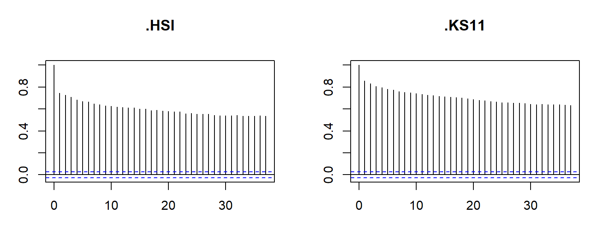
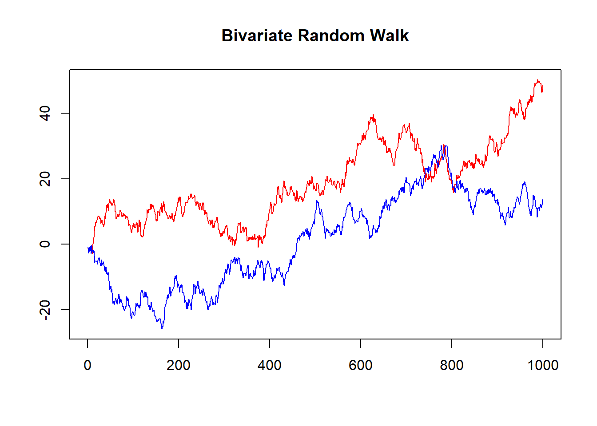
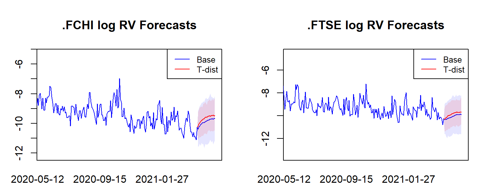
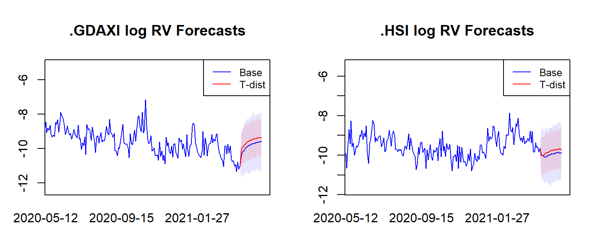
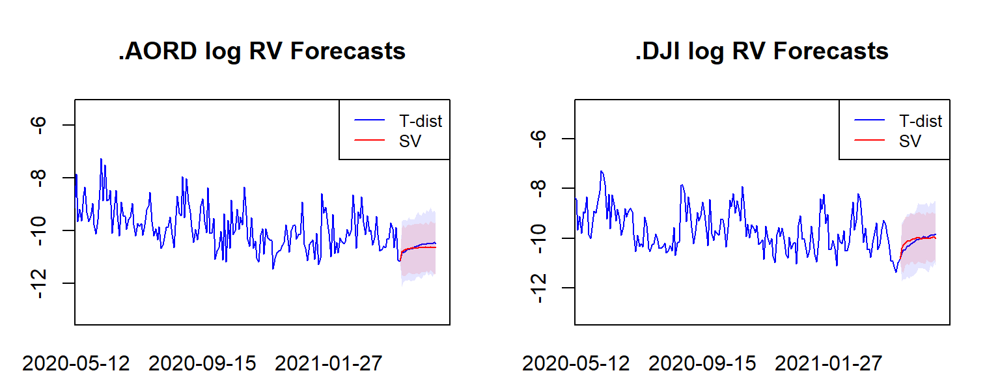
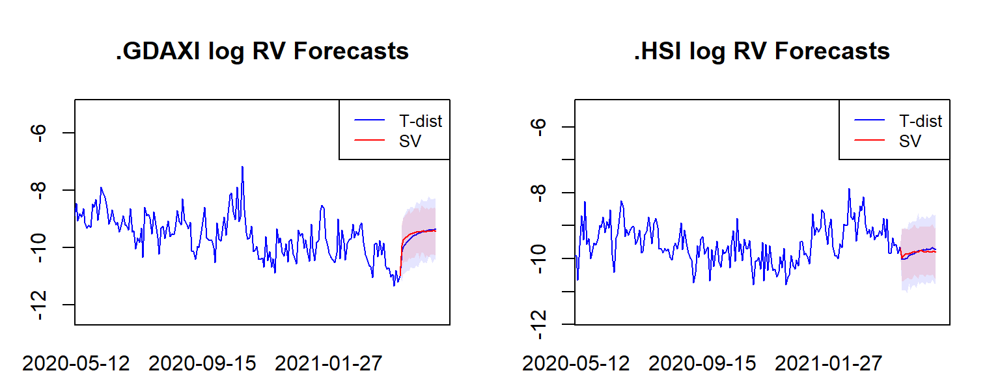
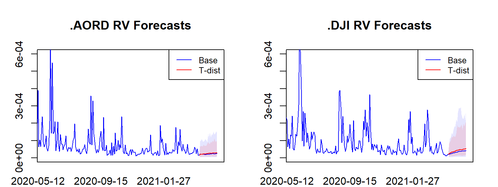
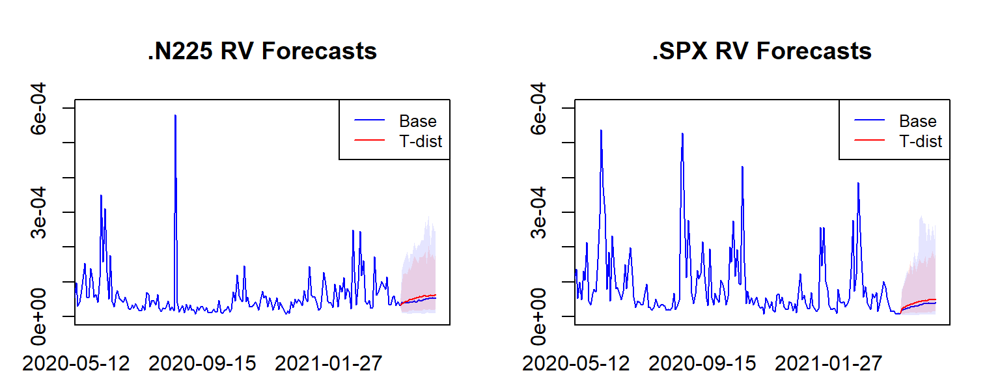
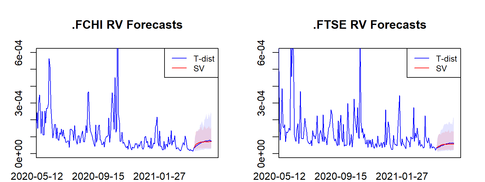

Predicting Stock Index Realised Volatility using Bayesian VARs
Abstract: This research report explores whether VARs and Bayesian VARs are able to predict realised volatility in equity index markets.
Keywords. BVARs, Realised Volatility, Stock Indices, SP500
Research Proposal
Objective and Motivation
This paper seeks to examine the effectiveness of Bayesian VARs as a method for forecasting realised volatility (RV) in equity markets. It will explore how various Bayesian estimation techniques applied to vector autoregression perform with respect to high frequency RV data. The accurate prediction of market volatility has many applications in Finance, including the pricing of derivatives and the estimation of risk measures such as Value at Risk.
Data
The models will be applied to daily data on realised variances occurring on a group of global stock indices. Stock indices serve as gauges of overall equity market performance and are generally categorised by country. For this analysis we will focus on 10 major global indices, the SPX, DJI, FTSE, GDAXI, FCHI, STOXX50E, N225, AORD, HSI and the KS11.
| Code | Index Name | Region |
|---|---|---|
| SPX | S&P 500 | US |
| DJI | Dow Jones | US |
| FTSE | FTSE 100 | UK |
| GDAXI | DAX | Germany |
| FCHI | CAC40 | France |
| STOXX50E | EURO STOXX | Europe |
| N225 | NIKKEI 225 | Japan |
| AORD | All Ordinaries | Australia |
| HSI | Hang Seng | Hong Kong |
| KS11 | KOSPI | Korea |
Realised variance is a measure of historical volatility occurring in financial time series constructed from intraday high frequency return data.
Realised variance is defined as the sum of squared returns over specific period:
\[\begin{align} Realised\,Variance = \sum r^2_t \end{align}\]Where \(p_t\) denotes the price of an asset at time t and \(r_t\) is defined as the log return over a predetermined interval, for example 5 minutes:
\[\begin{align} r_t = log(p_t / p_{t-1}) \end{align}\]Realised volatility RV is then computed as the square root of the realised variance.
\[\begin{align} RV = \sqrt{\sum r^2_t} \end{align}\]The RV data is sourced from the Oxford Man Realised Library which provides a number of precalculated volatility metrics, including RV on stock indices spanning multiple years. The data set has been employed widely in the literatur for empirical volatility studies, such as by Dutta and Das (2022) and Brandi and Di Matteo (2022). For this analysis we will utilise the 5 minute RV measure provided in the dataset for each of our 10 indices. The data ranges between 2000 and 2021.
Figure 1. Time series plots of original values
As each of the series follow a similar general pattern only four of the ten indices are plotted for visualisation above. From a visual inspection of the examples above, we can see that realised volatility appears highly variable exhibiting persistence, volatility clustering, and positive outlying observations. There are clear spikes in RV over certain periods in time. These periods of high volatility appear to persist for some time before subsiding, which provides evidence in favour of an autoregressive model specification.
Furthermore, spikes in RV appear to happen around the same times across markets. This provides our main motivation for modelling RV via a VAR specification whereby we can seek to capture the dynamic interrelationships between global equity markets.
For ease of modelling and in order to bring the data closer to normality we will work with the log transformed variable \(log(rv_t)\).
Figure 2. Time series plots of log transformed values

Conducting Augmented Dickey-Fuller tests on the log transformed RVs to test for stationarity results in the rejection of the null hypothesis of non-stationarity for all series at the 0.05 level. This implies stationarity in the log transformed variables. Observing ACF plots for each of the logged variables however highlights a high degree of persistence over time, further motivating an AR specification.
ADF Test Results for Log Transformed 5 Minute RVs
| Index | P Value |
|---|---|
| .SPX | 0.01 |
| .DJI | 0.01 |
| .FTSE | 0.01 |
| .GDAXI | 0.01 |
| .FCHI | 0.01 |
| .STOXX50E | 0.01 |
| .N225 | 0.01 |
| .AORD | 0.01 |
| .HSI | 0.01 |
| .KS11 | 0.01 |
Persistence of the log realised volatilities


Model
The model will follow the standard \(VAR(p)\) setup as follows:
\[\begin{align} rv_t &= \mu_0 + A_1 rv_{t-1} + \dots + A_p rv_{t-p} + \epsilon_t\\ \epsilon_t | RV_{t-1} &\sim iidN_N(0_N, \Sigma) \end{align}\]Where \(rv_t\) is a vector of log transformed realised variances for our \(N=10\) stock indices on day \(t\). The \(A_i\) matrices are \(N\times N\) matrices of the autoregressive slope parameters.
The error term vector \(\epsilon_t\) given the data up to \(t-1\) is assumed to be iid multivariate normally distributed of dimension \(N=10\), with mean \(0_N\) and covariance matrix \(\Sigma\).
Bayesian estimation techniques will be then utilised in conjunction with a suitably chosen prior specification in order to estimate competing models and compute 20 day ahead RV forecasts across all indices.
The significance of being able to reliably forecast market volatility is primarily seen in the context of financial asset pricing. Volatility of the underlying asset is one of the crucial inputs required in options pricing. With reliable forecasts of stock index volatility one can assess the degree to which options quoted in the market are under or over estimating volatility relative to what is indicated by the historical realised dynamics.
Modelling Framework
Estimation Procedure for the Baseline Model
The baseline model is as follows:
\[\begin{align} Y &= XA + U \\ Y|X,A,\Sigma &\sim MN_{T \times N} (XA, \Sigma, I_T) \end{align}\]This implies the following form for the kernel of the likelihood function:
\[\begin{align} L(A,\Sigma|Y,X) \propto det(\Sigma)^{-\frac{T}{2}}exp(-\frac{1}{2}tr[\Sigma^{-1}(Y-XA)'(Y-XA)]) \end{align}\]We assume the usual matrix normal and inverse Wishart natural conjugate priors for \(A\) and \(\Sigma\):
\[\begin{align} p(A,\Sigma) &= p(A|\Sigma)p(\Sigma) \\ A|\Sigma &\sim MN_{K \times N}(\underline{A},\Sigma,\underline{V}) \\ \Sigma &\sim IW_N(\underline{S},\underline{\nu}) \end{align}\]The posterior distribution is given by the product of the likelihood and the priors.
\[\begin{align} p(A,\Sigma|Y,X) &\propto \det(\Sigma)^{-\frac{T}{2}} \\ &\times exp(-\frac{1}{2}tr[\Sigma^{-1}(Y-XA)'(Y-XA)]) \\ &\times \det(\Sigma)^{-\frac{N+K+\underline{v}+1}{2}} \\ &\times exp(-\frac{1}{2}tr[\Sigma^{-1}(A-\underline{A})'\underline(V)^{-1}(A-\underline{A})]) \\ &\times exp(-\frac{1}{2}tr[\Sigma^{-1}\underline{S}]) \end{align}\]Combining the terms and completing the squares for the terms within the square brackets yields the following posterior distributions for \(A\) and \(\Sigma\):
\[\begin{align} p(A|Y,X,\Sigma) &= MN_{K \times N}(\bar{A}, \Sigma, \bar{V}) \\ p(\Sigma|Y,X) &= IW_N(\bar{S},\bar{\nu}) \\ \\ \bar{V} &= (X'X + \underline{V}^{-1})^{-1} \\ \bar{A} &= \bar{V}(X'Y + \underline{V}^{-1}\underline{A}) \\ \bar{\nu} &= T + \underline{\nu} \\ \bar{S} &= \underline{S} + Y'Y + \underline{A}'\underline{V}^{-1}\underline{A} - \bar{A}'\bar{V}^{-1}\bar{A} \\ \end{align}\]Since the above fully characterises the joint posterior distribution we can then sample from these directly using a suitably chosen prior. A common prior for unit root nonstationary variables is the ‘Minnesota Prior’, which assumes that the variables follow a random walk. The prior mean \(\underline{A}\) is set to an identity matrix for the first lag and zeroes elsewhere. Meanwhile the column specific covariance matrix for A is set according to two shrinkage hyperparameters \(\kappa_1\) and \(\kappa_2\) which determine the level of shrinkage around the prior mean.
As the ADF tests for the log transformed RVs suggest that they are stationary, I instead work with an alternate form of the ‘Minnesota Prior’ whereby the variables are characterised as ‘white noise’. To achieve this, the \(\underline{A}\) matrix is set to a \(K \times N\) matrix of zeroes.
\[\begin{align} \underline{A} &= 0_{K \times N} \\ \underline{V} &= diag( \begin{bmatrix} \kappa_2 & \kappa_1(p^{-2}\otimes I_N') \end{bmatrix}) \end{align}\]The estimation routine can be implemented in a function in R as follows:
Posterior Estimation Function in R
get_posteriors = function(S, Y, X, priors) {
N = ncol(Y)
A.prior = priors[[1]]
V.prior = priors[[2]]
S.prior = priors[[3]]
nu.prior = priors[[4]]
# normal-inverse Wishart posterior parameters
############################################################
V.bar.inv = t(X)%*%X + diag(1/diag(V.prior))
V.bar = solve(V.bar.inv)
A.bar = V.bar%*%(t(X)%*%Y + diag(1/diag(V.prior))%*%A.prior)
nu.bar = nrow(Y) + nu.prior
S.bar = S.prior + t(Y)%*%Y + t(A.prior)%*%diag(1/diag(V.prior))%*%A.prior - t(A.bar)%*%V.bar.inv%*%A.bar
S.bar.inv = solve(S.bar)
# posterior draws
############################################################
Sigma.posterior = rWishart(S, df=nu.bar, Sigma=S.bar.inv)
Sigma.posterior = apply(Sigma.posterior,3,solve)
Sigma.posterior = array(Sigma.posterior,c(N,N,S))
A.posterior = array(rnorm(prod(c(dim(A.bar),S))),c(dim(A.bar),S))
L = t(chol(V.bar))
for (s in 1:S){
A.posterior[,,s]= A.bar + L%*%A.posterior[,,s]%*%chol(Sigma.posterior[,,s])
}
return(list(A.posterior, Sigma.posterior))
}For demonstrative purposes the above code can be applied to simulated data generated from a bivariate random walk.

The estimation routine utilising a Minnesota Prior specification is then implemented as follows:
p=1
N=2
Y_ext = (rw_data[(p+1):nrow(rw_data),c(1,2)]) #removing first p observations and taking logs
X_ext = matrix(1,nrow(Y_ext),1) #Creating X matrix
for (i in 1:p){
X_ext = cbind(X_ext, (rw_data[(p+1):nrow(rw_data)-i,c(1,2)]))
}
Y_ext = as.matrix(Y_ext)
X_ext = as.matrix(X_ext)
A.hat = solve(t(X_ext)%*%X_ext)%*%t(X_ext)%*%Y_ext
Sigma.hat = t(Y_ext-X_ext%*%A.hat)%*%(Y_ext-X_ext%*%A.hat)/nrow(Y_ext)
kappa.1 = 0.02^2
kappa.2 = 100
A.pri = matrix(0, (1+p*N), N)
A.pri[2:3,] = diag(2)
V.pri = diag(c(kappa.2,kappa.1*((1:p)^(-2))%x%rep(1,N)))
S.pri = diag(diag(Sigma.hat))
nu.pri = N+1
pris = list(
A = A.pri,
V = V.pri,
s = S.pri,
nu = nu.pri
)
res = get_posteriors(10000, Y_ext, X_ext, pris)
round(apply(res[[1]],1:2,mean),2) #A posterior mean [,1] [,2]
[1,] -0.01 -0.03
[2,] 0.99 0.00
[3,] 0.01 0.99round(apply(res[[2]],1:2,mean),2) #Sigma posterior mean [,1] [,2]
[1,] 0.94 0.01
[2,] 0.01 1.00As shown above the estimated parameter means closely match the expected values for the data generating process.
Model Extension: T-Distributed Errors
An alternative specification for the model is to relax the assumption of normally distributed errors. A T-Distribution more closely mirrors the leptokurtosis commonly seen in financial time series and as such it is a good candidate for our model of index volatility.
\[\begin{align} U_t &\sim t_N(0, \Sigma, \nu) \end{align}\]Following the methodology of Geweke 1993, a T-distribution for the error term can be represented by a scale mixture of normal distributions with a scaling term \(\lambda\) which is Inverse Gamma 2 distributed.
\[\begin{align} U|\lambda &\sim MN(0, \Sigma, \lambda I_T) \\ \lambda &\sim IG2( s_{\lambda}, \nu_{\lambda}) \end{align}\]Under this specification, the kernel of the likelihood function takes the following form:
\[\begin{align} L(A,\Sigma,\Lambda|Y,X) &\propto \det(\Sigma)^{-\frac{T}{2}} \det(\lambda I_T)^{-\frac{N}{2}} exp(-\frac{1}{2} tr[\Sigma^{-1} (Y-XA)' (\lambda I_T)^{-1} (Y-XA) ]) \end{align}\]The posteriors for \(A\), \(\Sigma\) and \(\lambda\) can then be derived using the likelihood and the prior distributions. The natural conjugacy of \(A\) and \(\Sigma\) is preserved and so the conditional posterior \(p(A,\Sigma|Y,X)\) can be derived as follows.
\[\begin{align} p(A,\Sigma|Y,X) &\propto L(A,\Sigma,\lambda|Y,X)p(A,\Sigma) \\ \\ &= \det(\Sigma)^{-\frac{T}{2}} \det(\lambda I_T)^{-\frac{N}{2}} exp(-\frac{1}{2} tr[\Sigma^{-1} (Y-XA)' (\lambda I_T)^{-1} (Y-XA) ]) \\ &\times \det(\Sigma)^{-\frac{N+k+\underline{\nu}+1}{2}} exp(-\frac{1}{2}tr[\Sigma^{-1}(A-\underline{A})'(\underline{V})^{-1}(A-\underline{A})]) \\ &\times exp(-\frac{1}{2}tr[\Sigma^{-1}\underline{S}]) \\ \\ &= \det(\Sigma)^{-\frac{T+N+K+\underline{\nu}+1}{2}} \det(\lambda I_T)^{-\frac{N}{2}} \\ &\times exp(-\frac{1}{2} tr[\Sigma^{-1}(Y'(\lambda I_T)^{-1}Y - 2A'X'(\lambda I_T)^{-1}Y + A'X'(\lambda I_T)^{-1}XA \\ &+ A'\underline{V}^{-1}A -2A'\underline{V}^{-1}\underline{A} + \underline{A}'\underline{V}^{-1}\underline{A} + \underline{S})]) \end{align}\]Expanding the terms inside the square brackets, followed by completing the squares, allows the above expression to be rearranged in the form of a Matrix-variate Normal Inverse Wishart kernel.
\[\begin{align} p(A,\Sigma|Y,X) &\sim MNIW(\bar{A},\bar{V},\bar{S},\bar{\nu}) \\ \\ \bar{V} &= (X'(\lambda I_T)^{-1}X + \underline{V}^{-1})^{-1} \\ \bar{A} &= \bar{V}(X'(\lambda I_T)^{-1}Y + \underline{V}^{-1}\underline{A}) \\ \bar{S} &= Y'(\lambda I_T)^{-1}Y + \underline{A}'\underline{V}^{-1}\underline{A} + \underline{S} - \bar{A}'\bar{V}^{-1}\bar{A} \\ \bar{\nu} &= T + \underline{\nu} \end{align}\]The posterior distribution for \(\lambda\) is then derived as follows:
\[\begin{align} p(\lambda|Y,X,A,\Sigma) &\propto L(A,\Sigma,\lambda|Y,X)p(\lambda) \\ \\ &= \det(\Sigma)^{-\frac{T}{2}} \det(\lambda I_T)^{-\frac{N}{2}} exp(-\frac{1}{2} tr[\Sigma^{-1} (Y-XA)' (\lambda I_T)^{-1} (Y-XA) ]) \\ &\times \lambda^{-\frac{\underline{\nu_{\lambda}}+2}{2}} exp(-\frac{1}{2}\frac{\underline{s_{\lambda}}}{\lambda}) \\ \\ &= \lambda^{-\frac{TN}{2}} exp(-\frac{1}{2}\frac{1}{\lambda} tr[\Sigma^{-1}(Y-XA)'(Y-XA)]) \\ &\times \lambda^{-\frac{\underline{\nu_{\lambda}}+2}{2}} exp(-\frac{1}{2}\frac{\underline{s_{\lambda}}}{\lambda}) \det(\Sigma)^{-\frac{T}{2}}\det(I_T)^{-\frac{N}{2}} \\ \\ &= \lambda^{-\frac{TN+\underline{\nu_{\lambda}}+2}{2}} exp(-\frac{1}{2}\frac{1}{\lambda} [tr[\Sigma^{-1}(Y-XA)'(Y-XA)] +\underline{s_{\lambda}}]) \det(\Sigma)^{-\frac{T}{2}} \\ \\ \end{align}\]As such,
\[\begin{align} \lambda|Y,A,\Sigma &\sim IG2(\bar{s_{\lambda}},\bar{\nu_{\lambda}}) \\ \bar{s_{\lambda}} &= tr[\Sigma^{-1}(Y-XA)'(Y-XA)] + \underline{s_{\lambda}} \\ \bar{\nu_{\lambda}} &= TN + \underline{\nu_{\lambda}} \end{align}\]We can then sample sequentially from the conditional posterior distributions via a Gibbs Sampler. In order to do so we initalise each of the parameters at arbitrary starting values. We then proceed accordingly:
- Draw \(\Sigma^{(i)}\) from the \(IW(\bar{S},\bar{\nu})\) distribution
- Draw \(A^{(i)}\) from the \(MN(\bar{A},\Sigma^{(i)}, \bar{V})\) distribution
- Draw \(\lambda^{(i)}\) from \(IG2(\bar{s_{\lambda}},\bar{\nu_{\lambda}})\)
We repeat the above steps for the desired amount of iterations and collect the parameter draws in an array. We can then scrutinise the characteristics of the posterior densities using these draws.
Gibbs Sampler code for t-distributed errors:
GS_tdistribution <- function(S, Y_ext, X_ext, priors) {
# Set priors
A.gprior = priors$A
A_V.gprior = priors$V
Sigma_s.gprior = priors$s
Sigma_v.gprior = priors$nu
lambda_s.gprior = priors$lambda_s
lambda_v.gprior = priors$lambda_nu
lambda.draw = lambda_s.gprior/rchisq(1, lambda_v.gprior)
# Initialize arrays to store posterior draws
Sigma.posterior.draws = array(NA, c(N,N,S))
A.posterior.draws = array(NA, c((1+p*N),N,S))
lambda.posterior.draws = rep(NA,S)
# Loop over S iterations
for (s in 1:S){
lambda.gprior.diag = diag(lambda.draw, nrow(Y_ext))
A_V.posterior = solve(t(X_ext)%*%diag(1/diag(lambda.gprior.diag))%*%X_ext + solve(A_V.gprior))
A.posterior = A_V.posterior%*%(t(X_ext)%*%diag(1/diag(lambda.gprior.diag))%*%Y_ext + solve(A_V.gprior)%*%A.gprior)
Sigma_s.posterior = t(Y_ext)%*%diag(1/diag(lambda.gprior.diag))%*%Y_ext + t(A.gprior)%*%solve(A_V.gprior)%*%A.gprior + Sigma_s.gprior - t(A.posterior)%*%solve(A_V.posterior)%*%A.posterior
Sigma_v.posterior = nrow(Y_ext) + Sigma_v.gprior
Sigma.inv.draw = rWishart(1, Sigma_v.posterior, solve(Sigma_s.posterior))[,,1]
Sigma.posterior.draws[,,s] = solve(Sigma.inv.draw)
A.posterior.draws[,,s] = matrix(mvtnorm::rmvnorm(1, mean=as.vector(A.posterior), sigma=Sigma.posterior.draws[,,s]%x%A_V.posterior), ncol=N)
lambda_s.posterior = sum(diag(Sigma.inv.draw%*%t(Y_ext - X_ext%*%A.posterior.draws[,,s])%*%(Y_ext - X_ext%*%A.posterior.draws[,,s]))) + lambda_s.gprior
lambda_v.posterior = nrow(Y_ext)*2 + lambda_v.gprior
lambda.draw = lambda_s.posterior / rchisq(1, lambda_v.posterior)
lambda.posterior.draws[s] = lambda.draw
}
return(list(Sigma.posterior.draws = Sigma.posterior.draws,
A.posterior.draws = A.posterior.draws,
lambda.posterior.draws = lambda.posterior.draws))
}
tdist_res_rw = GS_tdistribution(1000, Y_ext, X_ext, c(pris, list(lambda_s=1000, lambda_nu=1000)))
# A posterior mean
round(apply(tdist_res_rw$A.posterior.draws, 1:2, mean),2) [,1] [,2]
[1,] -0.01 -0.02
[2,] 0.99 0.00
[3,] 0.01 0.99# Sigma posterior mean
round(apply(tdist_res_rw$Sigma.posterior.draws, 1:2, mean),2) [,1] [,2]
[1,] 0.93 0.01
[2,] 0.01 0.98# Lambda posterior mean
round(mean(tdist_res_rw$lambda.posterior.draws),2)[1] 1.01As can be seen, when the extended model estimation routine is applied to the simulated bivariate random walk data, the estimates of \(A\) and \(\Sigma\) again match the true parameter values closely.
Model Extension: Stochastic Volatility with T Distributed Errors
The second extension to the model is a further augmentation to the form of the errors in order to account for stochastic volatility. We can explicitly account for heteroskedasticity in the errors by applying a model specification in which the variance changes over time according to some stochastic process. This extension can be combined with the previous model including t-distributed errors to achieve an even more robust model for errors.
\[ \begin{align} Y &= XA + U \\ U|\lambda &\sim MN(0, \Sigma, \lambda \text{diag}(\sigma^2)) \\ \lambda &\sim IG2( s_{\lambda}, \nu_{\lambda}) \\ \\ \sigma^2 &= (\exp(h_1), ..., exp(h_T)) \\ h_T &- \text{follows a stochastic volatility process} \\ \lambda &- \text{the scale parameter for t errors} \end{align}\]
It is convenient for estimation to assume \(h_t\) follows a random walk process. That is,
\[ \begin{align} h_t &= h_{t-1} + \sigma_v v_t \\ \\ v_t &\sim \mathcal{N}(0,1) \\ \sigma^2_v &- \text{estimated parameter of the model} \end{align} \]
Estimation of \(h\) is completed via its own Gibbs Sampling routine. The sampler is applied to a log-linearised form of the data which strips out the conditional mean in order to isolate the error term. The sampling routine involves drawing estimated parameters from a combination of Normal, IG2 as well the log Chi-Square distribution. The log Chi-Square distribution in this case is approximated by a mixture of ten normal distributions and sampled from using the inverse transform method. One pass of the sampler draws a sample of all of the estimated parameters, including \(T\times1\) vector \(h\), the exponent of which forms \(\sigma^2\).
With the overall model specified in this form, the likelihood function is as follows, with the \(\sigma^2\) diagonal matrix entering in place of the previous identity matrix \(I_T\).
\[ \begin{align} L(A,\Sigma,\Lambda|Y,X) &\propto \det(\Sigma)^{-\frac{T}{2}} \det(\lambda \times \text{diag}(\sigma^2))^{-\frac{N}{2}} exp(-\frac{1}{2} tr[\Sigma^{-1} (Y-XA)' (\lambda \times \text{diag}(\sigma^2))^{-1} (Y-XA) ]) \end{align} \]
Following the same derivations as before, we compute the full conditionals for \(A\), \(\Sigma\) and \(\lambda\) as
\[ \begin{align} p(A,\Sigma|Y,X) &= MNIW(\bar{A},\bar{V},\bar{S},\bar{\nu}) \\ \\ \bar{V} &= (X'(\lambda \text{diag}(\sigma^2))^{-1}X + \underline{V}^{-1})^{-1} \\ \bar{A} &= \bar{V}(X'(\lambda \text{diag}(\sigma^2))^{-1}Y + \underline{V}^{-1}\underline{A}) \\ \bar{S} &= Y'(\lambda \text{diag}(\sigma^2))^{-1}Y + \underline{A}'\underline{V}^{-1}\underline{A} + \underline{S} - \bar{A}'\bar{V}^{-1}\bar{A} \\ \bar{\nu} &= T + \underline{\nu} \\ \\ p(\lambda|Y,A,\Sigma) &= IG2(\bar{s_{\lambda}},\bar{\nu_{\lambda}}) \\ \bar{s_{\lambda}} &= tr[\Sigma^{-1}(Y-XA)'\text{diag}(\sigma^2)^{-1}(Y-XA)] + \underline{s_{\lambda}} \\ \bar{\nu_{\lambda}} &= TN + \underline{\nu_{\lambda}} \end{align} \]
Gibbs Sampling Routine for SV and T Distributed Errors
Initialize \(\lambda^{(0)}\) and \(h_t^{(0)}\).
At each iteration:
- Draw \(\Sigma^{(i)}\) from the \(IW(\bar{S},\bar{\nu})\) distribution
- Draw \(A^{(i)}\) from the \(MN(\bar{A},\Sigma^{(i)}, \bar{V})\) distribution
- Draw \(\lambda^{(i)}\) from \(IG2(\bar{s_{\lambda}},\bar{\nu_{\lambda}})\)
- Draw \(h^{(i)}\) from the SV sampling routine described above
Gibbs Sampler Code
SVcommon.Gibbs.iteration = function(aux, priors){
# A single iteration of the Gibbs sampler for the SV component
#
# aux is a list containing:
# Y - a TxN matrix
# X - a TxK matrix
# H - a Tx1 matrix
# h0 - a scalar
# sigma.v2 - a scalar
# s - a Tx1 matrix
# A - a KxN matrix
# Sigma - an NxN matrix
# sigma2 - a Tx1 matrix
#
# priors is a list containing:
# h0.v - a positive scalar
# h0.m - a scalar
# sigmav.s - a positive scalar
# sigmav.nu - a positive scalar
# HH - a TxT matrix
T = dim(aux$Y)[1]
N = dim(aux$Y)[2]
alpha.st = c(1.92677,1.34744,0.73504,0.02266,0-0.85173,-1.97278,-3.46788,-5.55246,-8.68384,-14.65000)
sigma.st = c(0.11265,0.17788,0.26768,0.40611,0.62699,0.98583,1.57469,2.54498,4.16591,7.33342)
pi.st = c(0.00609,0.04775,0.13057,0.20674,0.22715,0.18842,0.12047,0.05591,0.01575,0.00115)
Lambda = solve(chol(aux$Sigma))
Z = rowSums( ( aux$Y - aux$X %*% aux$A ) %*% Lambda ) / sqrt(N)
Y.tilde = as.vector(log((Z + 0.0000001)^2))
Ytilde.alpha = as.matrix(Y.tilde - alpha.st[as.vector(aux$s)])
# sampling initial condition
############################################################
V.h0.bar = 1/((1 / priors$h0.v) + (1 / aux$sigma.v2))
m.h0.bar = V.h0.bar*((priors$h0.m / priors$h0.v) + (aux$H[1] / aux$sigma.v2))
h0.draw = rnorm(1, mean = m.h0.bar, sd = sqrt(V.h0.bar))
aux$h0 = h0.draw
# sampling sigma.v2
############################################################
sigma.v2.s = priors$sigmav.s + sum(c(aux$H[1] - aux$h0, diff(aux$H))^2)
sigma.v2.draw = sigma.v2.s / rchisq(1, priors$sigmav.nu + T)
aux$sigma.v2 = sigma.v2.draw
# sampling auxiliary states
############################################################
Pr.tmp = simplify2array(lapply(1:10,function(x){
dnorm(Y.tilde, mean = as.vector(aux$H + alpha.st[x]), sd = sqrt(sigma.st[x]), log = TRUE) + log(pi.st[x])
}))
Pr = t(apply(Pr.tmp, 1, function(x){exp(x - max(x)) / sum(exp(x - max(x)))}))
s.cum = t(apply(Pr, 1, cumsum))
r = matrix(rep(runif(T), 10), ncol = 10)
ss = apply(s.cum < r, 1, sum) + 1
aux$s = as.matrix(ss)
# sampling log-volatilities using functions for tridiagonal precision matrix
############################################################
Sigma.s.inv = diag(1 / sigma.st[as.vector(aux$s)])
D.inv = Sigma.s.inv + (1 / aux$sigma.v2) * priors$HH
b = as.matrix(Ytilde.alpha / sigma.st[as.vector(aux$s)] + (aux$h0/aux$sigma.v2)*diag(T)[,1])
lead.diag = diag(D.inv)
sub.diag = mgcv::sdiag(D.inv, -1)
D.chol = mgcv::trichol(ld = lead.diag, sd = sub.diag)
D.L = diag(D.chol$ld)
mgcv::sdiag(D.L,-1) = D.chol$sd
x = as.matrix(rnorm(T))
a = forwardsolve(D.L, b)
draw = backsolve(t(D.L), a + x)
aux$H = as.matrix(draw)
aux$sigma2 = as.matrix(exp(draw))
return(aux)
}
GS_sv_tdist = function(S, Y_ext, X_ext, priors_sv){
#Full estimation routine for SV model
aux_sv = list(
Y = Y_ext,
X = X_ext,
H = matrix(1, nrow(Y_ext), 1),
h0 = 0,
sigma.v2 = 1,
s = matrix(1, nrow(Y_ext), 1),
A = matrix(0, (1+p*N), N),
Sigma = diag(diag(matrix(1,N,N))),
sigma2 = matrix(1,nrow(Y_ext),1)
)
posteriors = list(
H = matrix(NA,nrow(Y_ext),S),
sigma2 = matrix(NA,nrow(Y_ext),S),
s = matrix(NA,nrow(Y_ext),S),
h0 = rep(NA,S),
sigma.v2 = rep(NA,S),
A = array(NA, c((1+p*N),N,S)),
Sigma = array(NA, c(N,N,S)),
lambda = rep(NA, S)
)
lambda.draw = priors_sv$lambda_s/rchisq(1, priors_sv$lambda_v)
# Sigma.posterior.draws = array(NA, c(N,N,S))
# A.posterior.draws = array(NA, c((1+p*N),N,S))
lambda.posterior.draws = rep(NA,S)
for (s in 1:S){
lambda.gprior.diag = lambda.draw * matrix(diag(as.vector(aux_sv$sigma2)), ncol = nrow(Y_ext))
A_V.posterior = solve(t(X_ext)%*%diag(1/diag(lambda.gprior.diag))%*%X_ext + solve(priors_sv$V))
A.posterior = A_V.posterior%*%(t(X_ext)%*%diag(1/diag(lambda.gprior.diag))%*%Y_ext + solve(priors_sv$V)%*%priors_sv$A)
Sigma_s.posterior = t(Y_ext)%*%diag(1/diag(lambda.gprior.diag))%*%Y_ext + t(priors_sv$A)%*%solve(priors_sv$V)%*%priors_sv$A + priors_sv$S - t(A.posterior)%*%solve(A_V.posterior)%*%A.posterior
Sigma_v.posterior = nrow(Y_ext) + priors_sv$nu
Sigma.inv.draw = rWishart(1, Sigma_v.posterior, solve(Sigma_s.posterior))[,,1]
aux_sv$Sigma = solve(Sigma.inv.draw)
aux_sv$A = matrix(mvtnorm::rmvnorm(1, mean=as.vector(A.posterior), sigma=aux_sv$Sigma%x%A_V.posterior), ncol=N)
lambda_s.posterior = sum(diag(Sigma.inv.draw%*%t(Y_ext - X_ext%*%aux_sv$A)%*%diag(1/diag(matrix(diag(as.vector(aux_sv$sigma2)), ncol = nrow(Y_ext))))%*%(Y_ext - X_ext%*%aux_sv$A))) + priors_sv$lambda_s
lambda_v.posterior = nrow(Y_ext)*2 + priors_sv$lambda_v
lambda.draw = lambda_s.posterior / rchisq(1, lambda_v.posterior)
lambda.posterior.draws[s] = lambda.draw
aux_sv = SVcommon.Gibbs.iteration(aux_sv, priors_sv)
posteriors$H[,s] = aux_sv$H
posteriors$sigma2[,s] = aux_sv$sigma2
posteriors$s[,s] = aux_sv$s
posteriors$h0[s] = aux_sv$h0
posteriors$sigma.v2[s] = aux_sv$sigma.v2
posteriors$A[,,s] = aux_sv$A
posteriors$Sigma[,,s] = aux_sv$Sigma
posteriors$lambda[s] = lambda.draw
}
return(posteriors)
}
HH = 2*diag(nrow(Y_ext))
mgcv::sdiag(HH,-1) = -1
mgcv::sdiag(HH,1) = -1
priors_sv = list(
A = matrix(0, (1+p*N), N),
V = diag(c(kappa.2,kappa.1*((1:p)^(-2))%x%rep(1,N))),
S = diag(diag(Sigma.hat)),
nu = diag(diag(Sigma.hat)),
lambda_s = 1000,
lambda_v = 1000,
HH = HH,
h0.m = 0,
h0.v = 1,
sigmav.s = 1,
sigmav.nu= 1
)
svres = GS_sv_tdist(1000, Y_ext, X_ext, priors_sv)
head(round(apply(svres$A, 1:2, mean),2)) [,1] [,2]
[1,] -0.02 -0.05
[2,] 0.98 0.01
[3,] 0.02 0.98head(round(apply(svres$Sigma, 1:2, mean),2)) [,1] [,2]
[1,] 6.58 -0.11
[2,] -0.11 6.86round(mean(svres$lambda),2)[1] 0.58round(mean(svres$sigma2),2)[1] 0.52Empirical Results
The estimation procedures outlined above can be readily applied to the log RV data using the previously stated ‘Minnesota Prior’. For the purposes of this estimation I apply a lag of 5 to capture 1 week of trading. The estimated parameter matrices for \(A\) and \(\Sigma\) for both the baseline and extended models are as follows:
Baseline Model Estimation
A.hat = solve(t(X_ext)%*%X_ext)%*%t(X_ext)%*%Y_ext
Sigma.hat = t(Y_ext-X_ext%*%A.hat)%*%(Y_ext-X_ext%*%A.hat)/T
kappa.1 = 0.02^2
kappa.2 = 100
A.pri = matrix(0, (1+p*N), N)
V.pri = diag(c(kappa.2,kappa.1*((1:p)^(-2))%x%rep(1,N)))
S.pri = diag(diag(Sigma.hat))
nu.pri = N+1
pris = list(
A = A.pri,
V = V.pri,
s = S.pri,
nu = nu.pri
)
res = get_posteriors(1000, Y_ext, X_ext, pris)
head(round(apply(res[[1]],1:2,mean),2)) #A posterior mean [,1] [,2] [,3] [,4] [,5] [,6] [,7] [,8] [,9] [,10]
[1,] -3.18 -0.11 -0.93 -0.77 -0.67 -2.52 -2.00 0.24 -1.62 -1.14
[2,] 0.22 0.04 0.04 0.08 -0.01 0.02 0.00 0.04 -0.04 0.02
[3,] 0.08 0.14 0.05 0.07 0.06 0.04 0.05 0.13 0.05 0.06
[4,] 0.05 0.05 0.12 0.08 0.10 0.01 0.03 0.06 0.01 0.12
[5,] 0.10 0.04 0.06 0.11 0.03 0.04 0.02 0.04 0.02 0.04
[6,] -0.02 0.06 0.10 0.05 0.17 0.02 0.04 0.05 0.05 0.12head(round(apply(res[[2]],1:2,mean),2)) #Sigma posterior mean [,1] [,2] [,3] [,4] [,5] [,6] [,7] [,8] [,9] [,10]
[1,] 0.83 0.07 0.08 0.15 0.04 0.06 0.07 0.08 -0.01 0.09
[2,] 0.07 0.82 0.17 0.19 0.18 0.08 0.08 0.42 0.09 0.19
[3,] 0.08 0.17 0.51 0.19 0.24 0.05 0.06 0.18 0.05 0.26
[4,] 0.15 0.19 0.19 0.65 0.18 0.07 0.07 0.19 0.05 0.24
[5,] 0.04 0.18 0.24 0.18 0.58 0.05 0.07 0.18 0.07 0.28
[6,] 0.06 0.08 0.05 0.07 0.05 0.55 0.09 0.08 0.11 0.04Gibbs Sampler Estimation of T Distribution Model
tres = GS_tdistribution(300, Y_ext, X_ext, c(pris, list(lambda_s=4, lambda_nu=4))) #Set to a low value for speed of running. Final run will be longer.
head(round(apply(tres$A.posterior.draws, 1:2, mean),2)) [,1] [,2] [,3] [,4] [,5] [,6] [,7] [,8] [,9] [,10]
[1,] -4.61 -1.29 -1.99 -2.03 -1.67 -3.96 -3.33 -0.99 -3.00 -2.05
[2,] 0.12 0.04 0.04 0.06 0.01 0.02 0.01 0.04 -0.02 0.03
[3,] 0.06 0.10 0.06 0.07 0.06 0.04 0.05 0.10 0.05 0.06
[4,] 0.04 0.05 0.08 0.06 0.08 0.02 0.03 0.06 0.02 0.08
[5,] 0.07 0.05 0.06 0.07 0.05 0.03 0.03 0.06 0.02 0.05
[6,] 0.01 0.06 0.08 0.05 0.10 0.03 0.04 0.06 0.04 0.08head(round(apply(tres$Sigma.posterior.draws, 1:2, mean),2)) [,1] [,2] [,3] [,4] [,5] [,6] [,7] [,8] [,9] [,10]
[1,] 0.50 0.03 0.04 0.06 0.02 0.03 0.03 0.04 0.00 0.04
[2,] 0.03 0.52 0.07 0.07 0.07 0.04 0.04 0.14 0.05 0.07
[3,] 0.04 0.07 0.32 0.07 0.09 0.02 0.03 0.07 0.02 0.09
[4,] 0.06 0.07 0.07 0.40 0.07 0.03 0.03 0.07 0.02 0.08
[5,] 0.02 0.07 0.09 0.07 0.35 0.03 0.04 0.07 0.04 0.10
[6,] 0.03 0.04 0.02 0.03 0.03 0.33 0.04 0.04 0.05 0.02round(mean(tres$lambda.posterior.draws),2)[1] 3.97Gibbs Sampler Estimation of SV & T Distribution Model
HH = 2*diag(nrow(Y_ext))
mgcv::sdiag(HH,-1) = -1
mgcv::sdiag(HH,1) = -1
priors_sv = list(
A = matrix(0, (1+p*N), N),
V = diag(c(kappa.2,kappa.1*((1:p)^(-2))%x%rep(1,N))),
S = diag(diag(Sigma.hat)),
nu = diag(diag(Sigma.hat)),
lambda_s = 1000,
lambda_v = 1000,
HH = HH,
h0.m = 0,
h0.v = 1,
sigmav.s = 1,
sigmav.nu= 1
)
svres = GS_sv_tdist(300, Y_ext, X_ext, priors_sv) #Set to a low value for speed of running. Final run will be longer.
head(round(apply(svres$A, 1:2, mean),2)) [,1] [,2] [,3] [,4] [,5] [,6] [,7] [,8] [,9] [,10]
[1,] -6.84 -4.23 -4.26 -4.54 -4.02 -6.24 -5.58 -3.96 -5.50 -4.33
[2,] 0.08 0.02 0.03 0.04 0.01 0.01 0.00 0.03 -0.02 0.02
[3,] 0.03 0.06 0.04 0.05 0.04 0.03 0.03 0.07 0.03 0.04
[4,] 0.03 0.04 0.06 0.05 0.05 0.02 0.02 0.04 0.01 0.06
[5,] 0.05 0.04 0.04 0.05 0.04 0.02 0.02 0.04 0.01 0.04
[6,] 0.01 0.04 0.05 0.04 0.07 0.02 0.03 0.04 0.03 0.06head(round(apply(svres$Sigma, 1:2, mean),2)) [,1] [,2] [,3] [,4] [,5] [,6] [,7] [,8] [,9] [,10]
[1,] 0.33 0.01 0.02 0.03 0.01 0.01 0.01 0.01 -0.01 0.02
[2,] 0.01 0.34 0.03 0.03 0.03 0.02 0.02 0.06 0.02 0.03
[3,] 0.02 0.03 0.21 0.03 0.04 0.01 0.01 0.03 0.01 0.04
[4,] 0.03 0.03 0.03 0.27 0.03 0.01 0.01 0.03 0.01 0.04
[5,] 0.01 0.03 0.04 0.03 0.23 0.01 0.02 0.03 0.02 0.04
[6,] 0.01 0.02 0.01 0.01 0.01 0.21 0.01 0.02 0.02 0.01round(mean(svres$lambda),2)[1] 0.93round(mean(svres$sigma2),2)[1] 14.99The 3 sets of estimation results above yield comparable estimates for the autoregressive parameter matrix \(A\). The estimates for the constant terms are of similar magnitude across all models, as are the autoregressive coefficients.
We can then compute forecasts for all models by sampling from the predictive densities. For each draw of \(A\) and \(\Sigma\), we sample h times from the predictive density in order to compute a forecast horizon of h periods. Each of the h draws are computed as 1 period ahead forecasts. Where the predictive density requires data which has not yet been observed this is replaced by the preceding forecasts computed within the same iteration.
#Predictive density function
library(MASS)
library(HDInterval)
library(mvtnorm)
library(plot3D)
get_predictions = function(S, h, A.posterior, Sigma.posterior){
Y.h = array(NA,c(h,N,S))
for (s in 1:(S/1)){
x.Ti = Y_ext[(nrow(Y_ext)-p+1):nrow(Y_ext),]
if (p>1){
x.Ti = x.Ti[1:p,]
}
for (i in 1:h){
x.T = c(1,as.vector(t(x.Ti)))
Y.h[i,,s] = rmvnorm(1, mean = x.T%*%A.posterior[,,s], sigma=Sigma.posterior[,,s])
if (p==1){
x.Ti = Y.h[i,,s]
} else {
x.Ti = rbind(Y.h[i,,s],x.Ti[1:(p-1),])
}
}
}
point.f.1 = apply(Y.h[,1,],1,mean)
point.interval.1 = apply(Y.h[,1,],1,hdi,credMass=0.90)
point.f.2 = apply(Y.h[,2,],1,mean)
point.interval.2 = apply(Y.h[,2,],1,hdi,credMass=0.90)
point.f.3 = apply(Y.h[,3,],1,mean)
point.interval.3 = apply(Y.h[,3,],1,hdi,credMass=0.90)
point.f.4 = apply(Y.h[,4,],1,mean)
point.interval.4 = apply(Y.h[,4,],1,hdi,credMass=0.90)
point.f.5 = apply(Y.h[,5,],1,mean)
point.interval.5 = apply(Y.h[,5,],1,hdi,credMass=0.90)
point.f.6 = apply(Y.h[,6,],1,mean)
point.interval.6 = apply(Y.h[,6,],1,hdi,credMass=0.90)
point.f.7 = apply(Y.h[,7,],1,mean)
point.interval.7 = apply(Y.h[,7,],1,hdi,credMass=0.90)
point.f.8 = apply(Y.h[,8,],1,mean)
point.interval.8 = apply(Y.h[,8,],1,hdi,credMass=0.90)
point.f.9 = apply(Y.h[,9,],1,mean)
point.interval.9 = apply(Y.h[,9,],1,hdi,credMass=0.90)
point.f.10 = apply(Y.h[,10,],1,mean)
point.interval.10 = apply(Y.h[,10,],1,hdi,credMass=0.90)
point.forecasts = list(point.f.1, point.f.2, point.f.3, point.f.4, point.f.5, point.f.6, point.f.7, point.f.8, point.f.9, point.f.10)
interval.forecasts = list(point.interval.1, point.interval.2, point.interval.3, point.interval.4, point.interval.5, point.interval.6, point.interval.7, point.interval.8, point.interval.9, point.interval.10)
return(list(point.forecasts, interval.forecasts))
}
preds_base = get_predictions(1000, 20, res[[1]], res[[2]])
preds_t = get_predictions(300, 20, tres$A.posterior.draws, tres$Sigma.posterior.draws)
preds_sv = get_predictions(300, 20, svres$A, svres$Sigma)The respective out of sample forecasts for 20 days ahead are plotted below. The first set of plots compare the Baseline model to the T-Distribution model. The two extended models are then compared against one another. 90% confidence intervals are denoted by the shaded regions.
20 Day log RV Forecast Plots
Baseline model vs T Distribution Model



T Distribution Model vs SV Model


As can be seen by the point forecasts, all model forecasts appear to converge back to a long term average. The forecasts trend higher over the forecast period for all variables, which might be explained as the model predicting volatility will normalise at a higher long run level after a period of relatively low volatility leading up to the forecast period. Forecasts in the T-distribution and Stochastic Volatility models appear to move back to the long run mean more quickly than that of the baseline model, suggesting faster mean reversion.
Comparing the confidence intervals of the models, we can see that the extended models have tighter 90% confidence intervals for all forecasts. This appears to suggest that our modifications to the model are appropriate and lead to increased forecasting power.
If the data has fatter tails than would be captured by a Normal distribution this may have been leading to larger variances estimated by the baseline model. The extended model allows for outliers in the data and therefore estimates the variance more accurately, leading to tighter intervals.
Likewise the further extension to include stochastic volatility is apt to capture time varying heteroskedasticity in the model. In general, the CIs for the SV model appear slightly tigher than that of the T-distribution model alone, suggesting some slight gain from the extension.
We can transform the variables and forecasts back into daily RVs by taking the exponent of the variables. Visually the forecasts seem reasonable given the historical data, with the forecasts again reverting towards the long term average. The confidence intervals also look sensible given the transformation back to levels, with the width of the band increasing as the forecasted RV increases as we would expect from the transformation. Again the extended models outperform the baseline model in terms of CI width.
Un-transformed RV Forecasts
Baseline Model vs T Distribution Model



T Distribution Model vs SV Model

Concluding Remarks
Overall the resulting forecast plots of the three competing models are encouraging with regard to the suitability of applying Bayesian techniques to volatility data. The forecasting gains made from simple amendments to the model specification make intuitive sense. They support our prior expectation that RV data is appropriately modeled by heteroskastic non-normal specifications. One can imagine further extensions which would even further dial in the predictive ability of an RV BVAR.
This study highlights that Bayesian estimation techniques can be readily modified in order to explore different options for a given modelling application. It is relatively straightforward to build extensions into a simple model and further extensions to this analysis are worth future exploration.